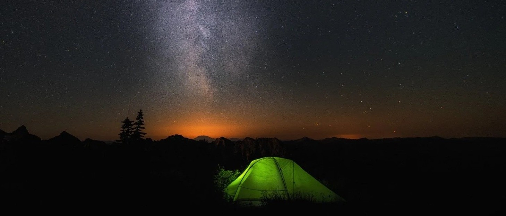
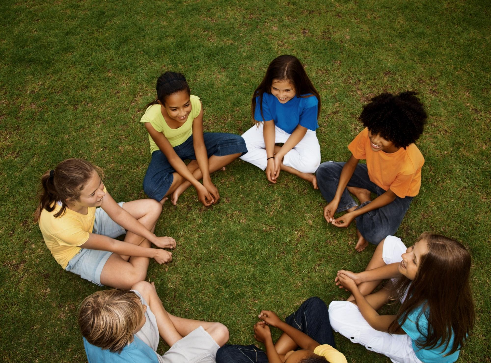
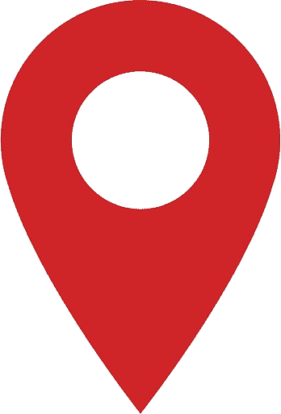
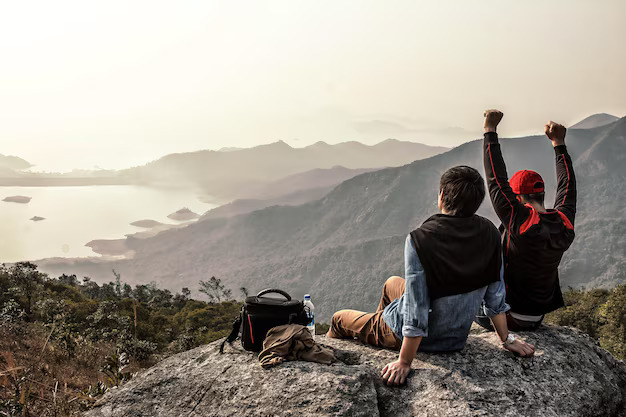
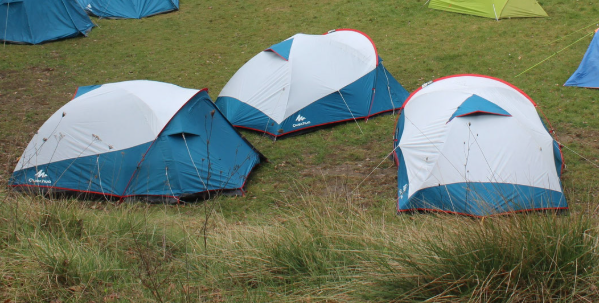

ACTIVITATS
QUÈ ÉS EL CAU?

Activitats Setmanals
Es duen a terme activitats diverses amb dinàmiques, visites a diferents llocs de Cerdanyola, històries... Són les activitats més comuns. Com que els i les caps som voluntaris joves i també treballem o estudiem, els horaris varien i s'anuncien amb una setmana d'antel·lació.
 Quan?
Quan?
Dissabtes o diumenges

On?Al Cau o per Cerdanyola

Caps de Setmanes fora
Són espais més llargs i distesos que ens permeten per tant treballar els nostres objectius amb més calma i profunditat, i que sobretot són imprescindibles per a coneixer-nos més, cohesionar-nos, i anar formant el sentiment d'unitat que només creix amb les experiències comunes i els records que anem creant.
Solen durar des de dissabte mati fins diumenge tarda, i el preu està inclòs dins les quotes anuals
Quan?
Un cop al trimestre
On?
Per Catalunya!

Campaments de Primavera
Es tracta de 5 dies que passem fora durant les vacançes de Setmana Santa, que conclouen el segon trimestre del cau. És la oportunitat perfecte per a envoltar-nos de naturalesa i muntanya, per a viure l'escoltisme i el companyerisme pur.
Quan?
5 primers dies de setmana santa (de dissabte a dimecres)
On?
Per Catalunya!

Campaments d'estiu
Banyar-se al riu, travessar un parc natural, viure en un bosc de follets, fer una ruta esgotadora que et farà sentir orgullósó/a, plantar el foulard dalt d'un cim, fer la gimcana d'apropament a la natura, menjar aquells macarrons tan esperats, el foc de camp... Els campaments són l'ocasió d'una aventura, el moment per gaudir de nous paisatges, descobrir el país i viure a prop de la natura. Un entorn privilegiat per a la convivència, ideal per a la culminació d'un projecte que s'ha anat construint al llarg del curs.
Quan?
Última setmana de juliol (de dissabte a diumenge)
On?
Als pirineus catalans!